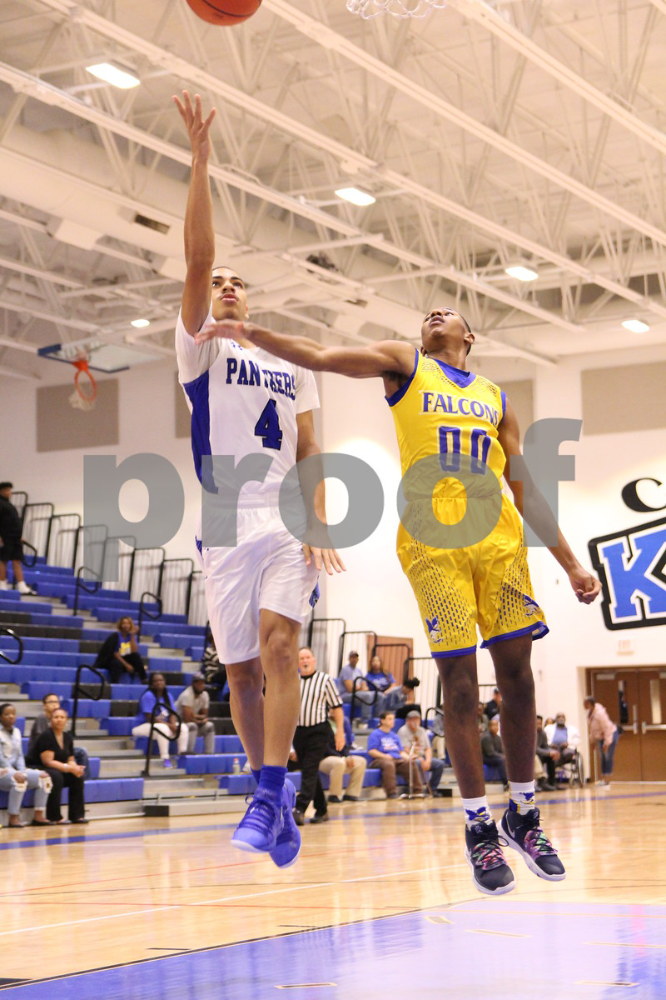

Home
About Me
Career
Portfolio
Me making a layup

My name is anthony tezino and i play basketball
My Career
The typical Riot Games Software Engineer salary is $129,288. Software Engineer salaries at Riot Games can range from $81,882.
<